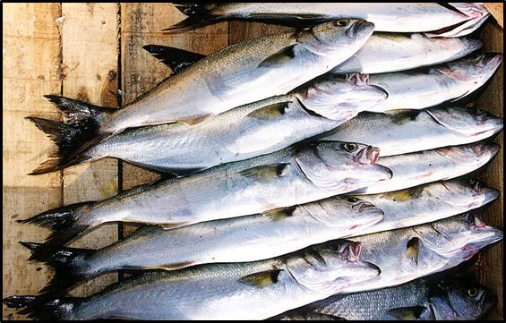
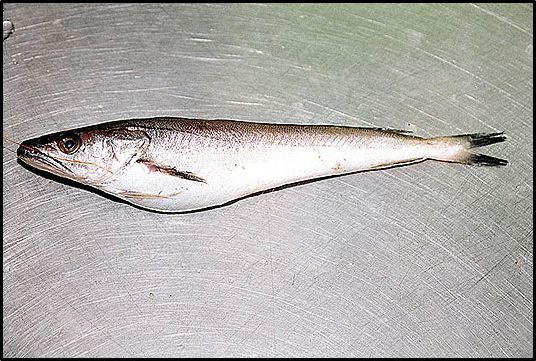
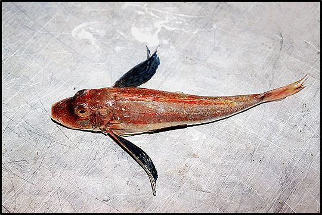

Η θαλάσσια πανίδα της περιοχής της Σαμοθράκης
Η θαλάσσια πανίδα της περιοχής είναι πολύ πλούσια και αντιπροσωπεύεται από όλες σχεδόν τις ομάδες των θαλάσσιων οργανισμών.
Χαρακτηριστικά είδη του ζωοβένθους περιλαμβάνουν:
- ψάρια του βυθού (γλώσσες, μπαρμπούνια, κουτσομούρες, φανάρια, χριστόψαρα)
- σπόγγους (του γένους Verongida)
- εχινόδερμα (αστερίες του γένους Marthasterias, αχινοί του γένους Paracentrotus)
- πολύχαιτους (του γένους Spirorbis, Amphiglena και Polyophthalmus)
- κοιλεντερωτά ( ανεμώνες του είδους Anemonia viridis)
- μαλάκια (χταπόδια, σουπιές)
- καρκινοειδή (καβούρια, αστακοί)
Αντιπροσωπευτικά πελαγικά είδη είναι:
- Ψάρια
- Γωβιοί (Gobis gobitis)
- Γύλοι (Coris julis)
- Σπάροι (Οικ. Sparidae)
- Καλογριές (Chromis chromis)
- Πέρκες (Serranus scriba)
- Κεφαλόπουλα (Οικ. Mugilidae)
- Μπακαλιάροι (Merluccius merluccius)
- Χάνοι (Serranus hepatus)
- Τσέρουλες (Spicara flexuosa)
- Καπόνια (Trigla lucerna)
- Μαγιάτικα (Seriola dumerili)
- Μελανούρια (Oblana melanura)
- Ζαργάνες (Belone belone)
- Ροφοί (Epinephelus guaza)
- Σαργοί (Diplodus sargus)
- Σκαθάρια (Spondylosoma cantharus)
- Συναγρίδες (Dentex dentex)
- Τσιπούρες (Sparus aurata)
- Φαγγριά (Pagrus pagrus)
Θαλάσσια ερπετά
Στην περιοχή εμφανίζεται περιστασιακά η θαλάσσια χελώνα Caretta caretta
Θαλάσσια θηλαστικά
Στην περιοχή έχουν εμφανιστεί η μεσογειακή φώκια, και τρία είδη δελφινιών (κοινό δελφίνι, ζωνοδέλφινο, φώκαινα).